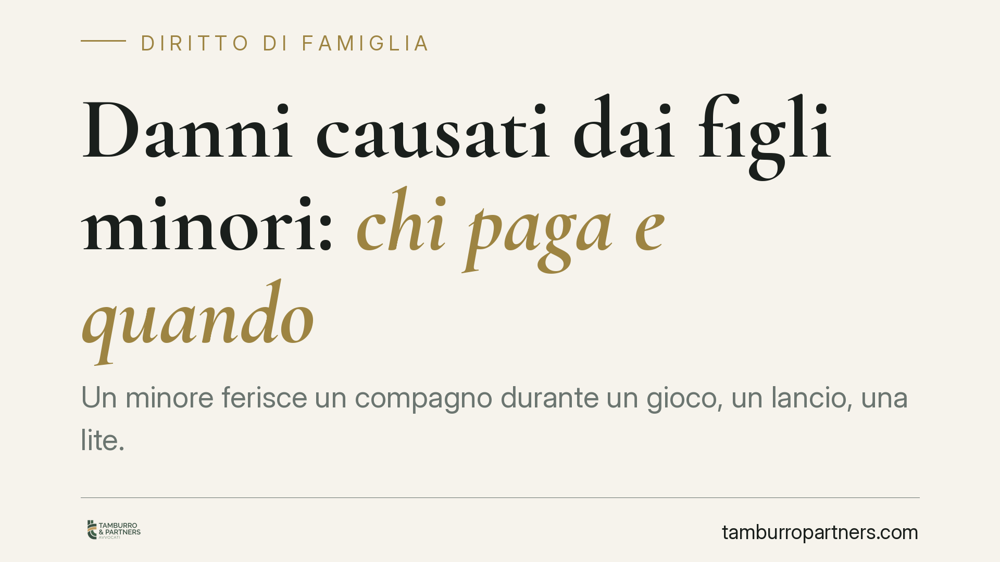

Danni causati dai figli minori: chi paga e quando
Un minore ferisce un compagno durante un gioco, un lancio, una lite. Chi risarcisce la vittima? Il codice civile pone sui genitori una responsabilità che scatta quasi automaticamente, salvo prova contraria. Capire come funziona l'art. 2048 c.c. serve a chi subisce il danno e a chi rischia di doverlo pagare per il comportamento del proprio figlio.

Il caso tipico
Un ragazzino colpisce un coetaneo con un oggetto, gli provoca una lesione e i genitori della vittima chiedono il risarcimento. Domanda ricorrente: paga il minore, pagano i genitori, pagano tutti? La risposta dipende dall'età, dalla capacità del minore e dalla condotta educativa e di sorveglianza dei genitori.
Inquadramento normativo
La norma centrale è l'art. 2048, comma 1, del codice civile: il padre e la madre sono responsabili del danno cagionato dal fatto illecito dei figli minori che abitano con loro.
Si tratta di una responsabilità per colpa presunta. La legge, cioè, presume che il danno sia dipeso da una carenza dei genitori nella vigilanza (*culpa in vigilando*) o nell'educazione (*culpa in educando*). L'onere della prova è invertito: non è la vittima a dover dimostrare la colpa dei genitori, ma sono i genitori a dover provare, come recita la norma stessa, "di non aver potuto impedire il fatto".
Due distinzioni contano.
La *culpa in vigilando* riguarda il controllo materiale sul minore nel momento del fatto. La *culpa in educando* riguarda invece l'adeguatezza del percorso educativo impartito nel tempo: valori, regole, rispetto degli altri. Quest'ultima è la più difficile da superare, perché non basta dimostrare di non essere stati presenti quando è accaduto il danno.
Quanto al minore, occorre distinguere. Se è capace di intendere e di volere — valutazione da compiere in concreto in base a età e maturità — risponde direttamente del proprio fatto illecito ex art. 2043 c.c., in solido con i genitori che rispondono ex art. 2048 c.c. La vittima può quindi agire verso entrambi.
Se invece il minore, per età o condizioni, non è capace di intendere e di volere, non risponde del proprio fatto: opera l'art. 2047 c.c., che pone la responsabilità in capo a chi era tenuto alla sua sorveglianza. Sono due binari distinti: l'art. 2047 c.c. non si somma all'art. 2048 c.c. per il minore capace.
Infine, il comma 2 dell'art. 2048 c.c. disciplina la posizione dei precettori e di chi insegna un mestiere o un'arte: sono responsabili del danno cagionato dai loro allievi nel tempo in cui sono sotto la loro vigilanza. È il caso, ad esempio, dell'istituto scolastico durante l'orario di lezione.
Cosa cambia in concreto
Per chi subisce il danno, la posizione è favorevole: non deve provare la colpa dei genitori, che si presume. Deve dimostrare il fatto, il danno e il nesso tra i due.
Per i genitori, il quadro è più esigente. Superare la presunzione richiede di dimostrare non solo di aver adeguatamente sorvegliato il figlio, ma di avergli impartito un'educazione idonea a prevenire condotte pericolose. La giurisprudenza di legittimità è tradizionalmente rigorosa su questo punto.
Una precisazione sui genitori separati. Non è corretto affermare che risponda soltanto il genitore con cui il figlio abita. L'orientamento più recente tende a coinvolgere entrambi i genitori per la *culpa in educando*, anche in caso di affidamento condiviso o di collocamento presso uno solo, perché il dovere educativo permane in capo a entrambi a prescindere dalla convivenza materiale quotidiana.
Come difendersi
La prova liberatoria è possibile ma stringente. Non basta l'assenza fisica al momento del fatto. Occorre ricostruire un modello educativo coerente e documentabile e, dove rilevi, l'imprevedibilità e la subitaneità della condotta del minore, tale da rendere la vigilanza materialmente impossibile.
Cosa fare in concreto
- Conservate traccia del percorso educativo del minore (attività, contesti di socializzazione, indicazioni comportamentali impartite): può servire a dimostrare l'assenza di *culpa in educando*.
- Verificate le polizze di responsabilità civile della famiglia: molte coperture "capofamiglia" includono i danni causati dai figli minori conviventi. Leggete massimali ed esclusioni.
- Non sottoscrivete accordi o dichiarazioni di responsabilità a caldo, subito dopo il fatto, senza valutarne le conseguenze.
- Documentate subito dinamica e circostanze (testimoni, luogo, presenza di adulti terzi come precettori o sorveglianti), perché incidono sull'individuazione del responsabile.
- In caso di richiesta risarcitoria, è opportuno rivolgersi a un legale prima di rispondere, per valutare fondatezza della pretesa e possibili difese.
Disclaimer
Contributo informativo a cura di Tamburro & Partners Avvocati - Avv. Giuseppe Tamburro. Non costituisce parere legale.
Ogni famiglia ha il suo equilibrio.
Separazione, divorzio, affidamento, assegno: se vuoi un confronto riservato su una specifica situazione, scrivi allo studio. Ti rispondiamo entro un giorno lavorativo.